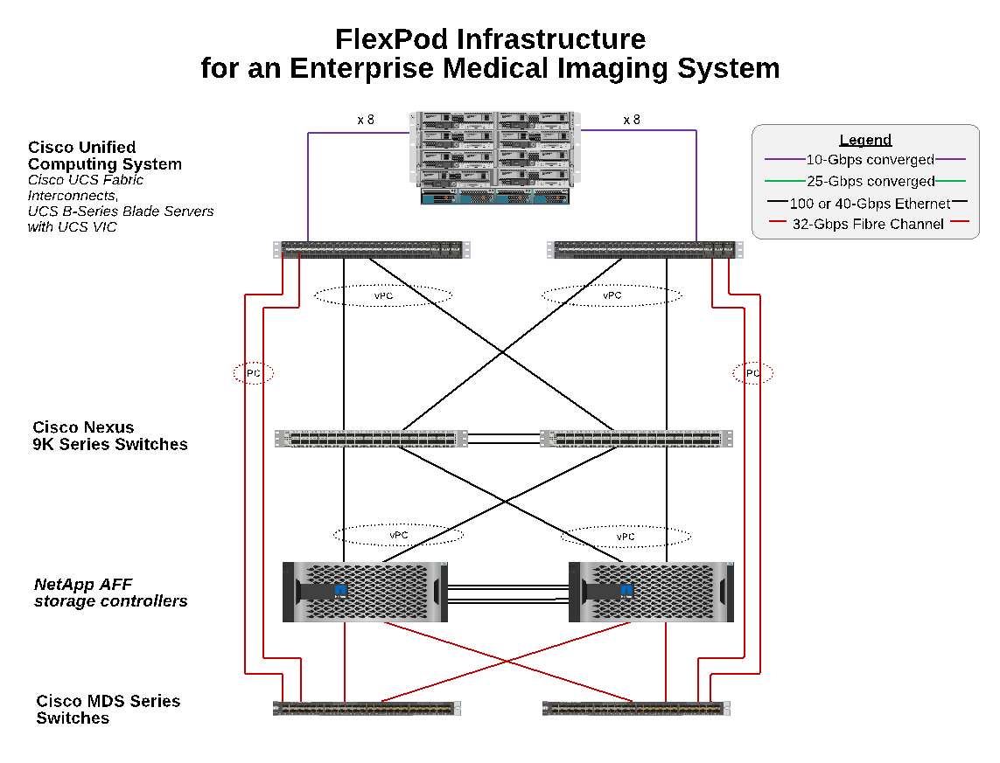
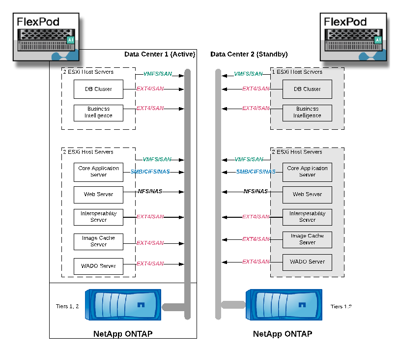

FlexPod の定義
FlexPod の定義
アーキテクチャ
 変更を提案
変更を提案
FlexPod アーキテクチャは、コンピューティング、ネットワーク、ストレージスタック全体でコンポーネントやリンクに障害が発生した場合に高可用性を提供するように設計されています。クライアントアクセスとストレージアクセス用に複数のネットワークパスを用意することで、ロードバランシングとリソース利用率の最適化を実現します。
次の図は、医用画像システム解決策環境用の 16Gb FC/40Gb イーサネット（ 40GbE ）トポロジを示しています。

ストレージアーキテクチャ
このセクションのストレージアーキテクチャのガイドラインを使用して、エンタープライズ医用画像システム用のストレージインフラを構成します。
ストレージ階層
一般的なエンタープライズ医用画像環境は、複数の異なるストレージ階層で構成されています。各階層には、パフォーマンスとストレージプロトコルに関する固有の要件があります。ネットアップのストレージはさまざまな RAID テクノロジをサポートしており、詳細についてはこちらをご覧ください "こちらをご覧ください"。以下に、 NetApp AFF ストレージシステムが、イメージングシステムのさまざまなストレージ階層のニーズに対応する仕組みを示します。
-
* パフォーマンス・ストレージ（階層 1 ）。 * この階層は、データベース、 OS ドライブ、 VMware VMFS （ Virtual Machine File System ）データストアなどに、高いパフォーマンスと高い冗長性を提供します。ONTAP に設定されているように、ブロック I/O は、ファイバを介して SSD の共有ストレージアレイに移動されます。最小レイテンシは 1 ミリ秒 ~3 ミリ秒で、一時的にピークは 5 ミリ秒に設定されます。このストレージ階層は通常、短期保存キャッシュに使用されます。通常、オンライン DICOM 画像にすばやくアクセスするための 6 ～ 12 か月の画像保存に使用されます。この階層は、イメージキャッシュやデータベースバックアップなどに高パフォーマンスと高冗長性を提供します。ネットアップのオールフラッシュアレイは、持続可能な帯域幅で 1 ミリ秒未満のレイテンシを実現します。これは、一般的なエンタープライズ医用画像環境で想定されるサービス時間よりもはるかに短くなります。NetApp ONTAP RAID-TEC は、 3 つのディスク障害に対応するためにトリプルパリティ RAID ）と RAID DP （ 2 つのディスク障害に対応するためにダブルパリティ RAID ）の両方をサポートしています。
-
* アーカイブ・ストレージ（階層 2 ）。 * この階層は、一般的なコスト最適化ファイル・アクセス、大容量ボリューム用の RAID 5 または RAID 6 ストレージ、長期的な低コスト / パフォーマンス・アーカイブに使用されます。NetApp ONTAP RAID-TEC は、 3 つのディスク障害に対応するためにトリプルパリティ RAID ）と RAID DP （ 2 つのディスク障害に対応するためにダブルパリティ RAID ）の両方をサポートしています。FlexPod の NetApp FAS を使用すると、 NFS / SMB 経由で SAS ディスクアレイにアプリケーション I/O をイメージングできます。NetApp FAS システムは、持続可能な帯域幅で最大 10 ミリ秒のレイテンシを実現します。エンタープライズ医用画像システム環境のストレージティア 2 では、予想されるサービス時間よりもはるかに短くなります。
ハイブリッドクラウド環境でのクラウドベースのアーカイブは、 S3 などのプロトコルを使用してパブリッククラウドストレージプロバイダにアーカイブする場合に使用できます。NetApp SnapMirror テクノロジを使用すると、オールフラッシュアレイまたは FAS アレイから低速のディスクベースストレージアレイ、または Cloud Volumes ONTAP for AWS 、 Azure 、 Google Cloud にイメージデータをレプリケーションできます。
NetApp SnapMirror は、業界をリードするデータレプリケーション機能を備えており、ユニファイドデータレプリケーションによって医療画像システムを保護します。フラッシュ、ディスク、クラウドにわたるクロスプラットフォームレプリケーションにより、データファブリック全体でデータ保護管理を簡易化できます。
-
ネットアップストレージシステム間でデータをシームレスかつ効率的に転送し、同じターゲットボリュームと I/O ストリームを使用してバックアップとディザスタリカバリの両方をサポートします。
-
任意のセカンダリボリュームにフェイルオーバーします。セカンダリストレージ上の任意のポイントインタイム Snapshot からリカバリします。
-
データ損失ゼロの同期レプリケーション（ RPO=0 ）により、最も重要なワークロードを保護します。
-
ネットワークトラフィックを削減効率的な運用でストレージの設置面積を縮小
-
変更されたデータブロックのみが転送されるため、ネットワークトラフィックが軽減されます。
-
重複排除、圧縮、コンパクションなどのストレージ効率化のメリットを、転送時もプライマリストレージで維持できます。
-
ネットワーク圧縮機能によりインライン効率化をさらに向上
詳細については、を参照してください "こちらをご覧ください"。
次の表は、一般的な医用画像システムで特定の遅延およびスループットパフォーマンス特性に必要な各階層を示しています。
| ストレージ階層 | 要件 | ネットアップが推奨します |
|---|---|---|
1. |
1 ～ 5 ミリ秒の遅延 35 ～ 500 Mbps のスループット |
1 ミリ秒未満のレイテンシ AFF が設定された AFF A300 ハイアベイラビリティ（ HA ）ペアで 2 台のディスクシェルフを使用すると、最大 1.6GBps のスループットを処理できます |
2. |
オンプレミスアーカイブ |
FAS で最大 30 ミリ秒のレイテンシを実現 |
クラウドへのアーカイブ |
Cloud Volumes ONTAP への SnapMirror レプリケーション、または NetApp StorageGRID ソフトウェアによるバックアップのアーカイブ |
ストレージネットワーク接続
FC ファブリック
-
FC ファブリックは、コンピューティングからストレージへのホスト OS I/O に対応します。
-
2 つの FC ファブリック（ファブリック A とファブリック B ）がそれぞれ Cisco UCS ファブリック A と UCS ファブリック B に接続されています。
-
各コントローラノードには、 2 つの FC 論理インターフェイス（ LIF ）を備えた Storage Virtual Machine （ SVM ）があります。各ノードで、 1 つの LIF をファブリック A に接続し、もう 1 つの LIF をファブリック B に接続します
-
16Gbps FC のエンドツーエンド接続は、 Cisco MDS スイッチ経由で行われます。単一のイニシエータポート、複数のターゲットポート、およびゾーニングがすべて設定されている必要があります。
-
FC SAN ブートは、完全なステートレスコンピューティングを作成するために使用されます。サーバは、 AFF ストレージクラスタでホストされているブートボリューム内の LUN からブートされます。
iSCSI 、 NFS 、 SMB / CIFS 経由のストレージアクセス用の IP ネットワーク
-
各コントローラノードの SVM に iSCSI LIF が 2 つあります。各ノードで 1 つの LIF をファブリック A に接続し、 2 つ目の LIF をファブリック B に接続します
-
NAS データ LIF が各コントローラノードの SVM に 2 つあります。各ノードで 1 つの LIF をファブリック A に接続し、 2 つ目の LIF をファブリック B に接続します
-
スイッチ N9k-B への 10Gbps リンク用のストレージポートインターフェイスグループ（仮想ポートチャネル [vPC] ）、スイッチ N9k-B への 10Gbps リンク用
-
VM からストレージへの ext4 または NTFS ファイルシステムのワークロード：
-
IP 経由の iSCSI プロトコル。
-
-
NFS データストアでホストされている VM ：
-
VM OS I/O は、 Nexus スイッチを介して複数のイーサネットパスを経由します。
-
インバンド管理（アクティブ / パッシブボンド）
-
管理スイッチ N9k-B に 1Gbps リンク、管理スイッチ N9k-B に 1Gbps リンク
バックアップとリカバリ
FlexPod データセンターは、ネットアップの ONTAP データ管理ソフトウェアで管理されるストレージアレイ上に構築されます。ONTAP ソフトウェアは 20 年以上にわたって進化し、 VM 、 Oracle データベース、 SMB / CIFS ファイル共有、 NFS 向けにさまざまなデータ管理機能を提供してきました。また、 NetApp Snapshot テクノロジ、 SnapMirror テクノロジ、 NetApp FlexClone データレプリケーションテクノロジなどの保護テクノロジも提供します。NetApp SnapCenter ソフトウェアには、 VM 、 SMB / CIFS ファイル共有、 NFS 、 Oracle データベースのバックアップとリカバリに ONTAP の Snapshot 、 SnapRestore 、 FlexClone 機能を使用するためのサーバと GUI クライアントがあります。
NetApp SnapCenter ソフトウェアを採用しています "特許取得済み" Snapshot テクノロジ：ネットアップストレージボリューム上に、 VM または Oracle データベース全体のバックアップを瞬時に作成します。Oracle Recovery Manager （ RMAN ）と比較すると、 Snapshot コピーはブロックの物理コピーとして格納されないため、フルベースラインバックアップコピーは必要ありません。Snapshot コピーは、 Snapshot コピーが作成されたときに ONTAP WAFL ファイルシステムに存在していたストレージブロックへのポインタとして格納されます。このような物理的な緊密な関係により、 Snapshot コピーは元のデータと同じストレージアレイ上に保持されます。Snapshot コピーはファイルレベルで作成することもでき、バックアップをより細かく制御できます。
Snapshot テクノロジは、 Redirect-On-Write 方式に基づいています。最初はメタデータポインタのみを格納し、最初のデータ変更がストレージブロックに送信されるまでスペースをあまり消費しません。既存のブロックが Snapshot コピーによってロックされている場合、新しいブロックは ONTAP WAFL ファイルシステムによってアクティブコピーとして書き込まれます。この方法を用いると、書き込み時の変更手法で発生する二重書き込みを回避できます。
Oracle データベースのバックアップでは、 Snapshot コピーを使用することで時間を大幅に削減できます。たとえば、 RMAN のみを使用したバックアップの完了に 26 時間を要した場合、 SnapCenter ソフトウェアを使用した場合、完了までに 2 分未満かかることがあります。
また、データのリストアではデータブロックはコピーされず、 Snapshot コピーの作成時にアプリケーションと整合性のある Snapshot ブロックイメージへのポインタが反転されるため、 Snapshot バックアップコピーをほぼ瞬時にリストアできます。SnapCenter クローニングでは、既存の Snapshot コピーへのメタデータポインタの独立したコピーが作成され、ターゲットホストに新しいコピーがマウントされます。このプロセスは、高速かつストレージ効率にも優れています。
次の表に、 Oracle RMAN と NetApp SnapCenter ソフトウェアの主な違いをまとめます。
| バックアップ | リストア | クローン | フルバックアップが必要です | スペース使用量 | オフサイトへのコピー | |
|---|---|---|---|---|---|---|
RMAN を使用します |
遅い |
遅い |
遅い |
はい。 |
高 |
はい。 |
SnapCenter |
高速 |
高速 |
高速 |
いいえ |
低 |
はい。 |
次の図に、 SnapCenter のアーキテクチャを示します。

NetApp MetroCluster の構成は、世界中の数千社の企業で、高可用性（ HA ）、データ損失ゼロ、データセンター内外のノンストップオペレーションに使用されます。MetroCluster は、 ONTAP ソフトウェアのフリー機能で、別々の場所または障害ドメインにある 2 つの ONTAP クラスタ間でデータと設定を同期的にミラーリングします。MetroCluster は、クラスタに書き込まれたデータを同期的にミラーリングすることで、 RPO （ Recovery Point Objective ：目標復旧時点）ゼロという 2 つの目標を自動的に処理することで、アプリケーション用の継続的な可用性を備えたストレージを提供します。ほぼゼロの RTO （ Recovery Time Objective ：目標復旧時間）： 2 番目のサイトのデータをミラーリングし、 2 番目のサイトの MetroCluster でデータへのアクセスを自動化することで、 2 つのサイトにある 2 つの独立したクラスタ間でデータと設定を自動的にミラーリングすることができます1 つのクラスタ内でストレージがプロビジョニングされると、 2 つ目のサイトの 2 つ目のクラスタに自動的にミラーリングされます。NetApp SyncMirror テクノロジは、 RPO がゼロのすべてのデータの完全なコピーを提供します。そのため、 1 つのサイトのワークロードをいつでも反対のサイトに切り替えて、データを失うことなくデータの提供を継続できます。詳細については、を参照してください "こちらをご覧ください"。
ネットワーキング
Cisco Nexus スイッチのペアは、コンピューティングからストレージへの IP トラフィックと、医用画像システムイメージビューアの外部クライアントへの冗長パスを提供します。
-
ポートチャネルと vPC を使用するリンクアグリゲーションは、全体的に採用されており、より高い帯域幅と高可用性を実現します。
-
vPC は、ネットアップストレージアレイと Cisco Nexus スイッチの間で使用されます。
-
vPC は、 Cisco UCS ファブリックインターコネクトと Cisco Nexus スイッチの間で使用されます。
-
各サーバには、ユニファイドファブリックへの冗長接続を持つ仮想ネットワークインターフェイスカード（ vNIC ）があります。冗長性を確保するために、ファブリックインターコネクト間で NIC フェイルオーバーが使用されます。
-
各サーバには仮想 Host Bus Adapter （ vHBA ）があり、ユニファイドファブリックに冗長接続されます。
-
-
Cisco UCS ファブリックインターコネクトは、推奨されるようにエンドホストモードで設定され、アップリンクスイッチへの vNIC のダイナミックなピン接続を提供します。
-
FC ストレージネットワークは、 Cisco MDS スイッチのペアによって提供されます。
コンピューティング： Cisco Unified Computing System
異なるファブリックインターコネクトを介して 2 つの Cisco UCS ファブリックが、 2 つの障害ドメインを提供します。各ファブリックは、 IP ネットワークスイッチと別々の FC ネットワークスイッチの両方に接続されます。
各 Cisco UCS ブレードのサービスプロファイルは、 FlexPod ESXi を実行するためのベストプラクティスに従って作成されます。各サービスプロファイルには、次のコンポーネントが必要です。
-
NFS 、 SMB / CIFS 、およびクライアントまたは管理トラフィックを伝送する 2 つの vNIC （各ファブリックに 1 つ）
-
NFS 、 SMB / CIFS 、およびクライアントまたは管理トラフィック用の vNIC に追加の必要な VLAN
-
iSCSI トラフィックを伝送する 2 つの vNIC （各ファブリックに 1 つ）
-
ストレージへの FC トラフィック用に 2 つのストレージ FC HBA （ファブリックごとに 1 つ）
-
SAN ブート
仮想化
VMware ESXi ホストクラスタはワークロード VM を実行します。クラスタは、 Cisco UCS ブレードサーバ上で実行される ESXi インスタンスで構成されます。
各 ESXi ホストには、次のネットワークコンポーネントが含まれます。
-
FC または iSCSI で SAN をブートします
-
ネットアップストレージ上のブート LUN （ブート OS 専用 FlexVol 内）
-
NFS 、 SMB / CIFS 、または管理トラフィック用の 2 つの VMNIC （ Cisco UCS vNIC ）
-
ストレージへの FC トラフィック用に 2 つのストレージ HBA （ Cisco UCS FC vHBA ）
-
標準スイッチまたは分散仮想スイッチ（必要に応じて）
-
ワークロード VM 用の NFS データストア
-
VM の管理、クライアントトラフィックネットワーク、およびストレージネットワークポートグループ
-
各 VM の管理、クライアントトラフィック、ストレージアクセス（ NFS 、 iSCSI 、または SMB / CIFS ）用のネットワークアダプタ
-
VMware DRS が有効になりました
-
ストレージへの FC または iSCSI パスに対してネイティブマルチパスが有効化されています
-
VM の VMware スナップショットがオフになっています
-
VM のバックアップ用に VMware 用に NetApp SnapCenter を導入
医用画像システムのアーキテクチャ
医療機関では、医療画像システムは重要なアプリケーションであり、患者の登録から始まり、収益サイクルで請求関連の活動を終えるまでの臨床ワークフローに統合されています。
次の図は、一般的な大病院におけるさまざまなシステムを示しています。この図は、一般的な医用画像システムのアーキテクチャコンポーネントを拡大する前に、医療画像システムにアーキテクチャのコンテキストを提供することを目的としています。ワークフローは多岐にわたり、病院やユースケースによって異なります。
次の図は、患者、コミュニティクリニック、および大規模な病院のコンテキストにおける医用画像システムを示しています。

-
患者は、症状があるコミュニティクリニックを訪問します。相談中に、地域の医師は、 HL7 オーダーメッセージの形式で、より大きな病院に送信されるイメージングオーダーを作成します。
-
地域の医師の EHR システムは、 HL7 オーダー / ORD メッセージを大規模な病院に送信します。
-
エンタープライズ相互運用性システム（ Enterprise Service Bus （ ESB ）とも呼ばれる）は、注文メッセージを処理し、注文メッセージを EHR システムに送信します。
-
EHR は注文メッセージを処理します。患者記録が存在しない場合は、新しい患者記録が作成されます。
-
EHR はイメージングオーダーを医療画像システムに送信します。
-
患者は、画像検査の予約のために大病院に電話をかけます。
-
イメージング受信およびレジストレーションデスクは、放射線情報または同様のシステムを使用して、イメージング予約のための患者をスケジュールします。
-
患者が到着して画像取得の予約が行われ、画像またはビデオが作成されて PACS に送信されます。
-
放射線科医は画像を読み取り、ハイエンド／ GPU グラフィック対応の診断ビューアを使用して PACS 内の画像に注釈を付けます。特定の画像処理システムには、画像処理ワークフローに組み込まれた人工知能（ AI ）対応の効率向上機能があります。
-
画像オーダーの結果は、 ESB を介して HL7 ORU メッセージがオーダー結果として EHR に送信されます。
-
EHR はオーダー結果を患者の記録に処理し、サムネイル画像をコンテキスト対応のリンクで実際の DICOM 画像に配置します。EHR 内からより高い解像度の画像が必要な場合、医師は診断ビューアを起動できます。
-
医師が画像をレビューし、患者の記録に医師のメモを入力します。医師は、臨床決定支援システムを使用してレビュープロセスを強化し、患者の適切な診断を支援することができます。
-
EHR システムは、注文結果メッセージの形式で注文結果をコミュニティ病院に送信します。この時点で、コミュニティ病院が完全な画像を受信できる場合、画像は WADO または DICOM 経由で送信されます。
-
地域の医師が診断を完了し、次の手順を患者に提供します。
典型的な医療画像システムでは、 N 層構造のアーキテクチャが採用されています。医療画像処理システムのコアコンポーネントは、さまざまなアプリケーションコンポーネントをホストするアプリケーションサーバーです。一般的なアプリケーションサーバは、 Java ランタイムベースまたは C# .NET CLR ベースです。ほとんどのエンタープライズ医療画像処理ソリューションでは、 Oracle データベースサーバ、 MS SQL Server 、または Sybase をプライマリデータベースとして使用しています。さらに、一部のエンタープライズ医療画像システムでは、地理的領域でのコンテンツの高速化とキャッシュにデータベースを使用しています。企業の医療画像システムの中には、 MongoDB や Redis などの NoSQL データベースを、 DICOM インターフェイスや API 用のエンタープライズ統合サーバと組み合わせて使用するものもあります。
一般的な医療画像システムでは、診断ユーザー / 放射線医、または画像をオーダーした臨床医または医師の 2 人の異なるユーザーセットの画像にアクセスできます。
放射線科医は一般的に、仮想デスクトップインフラの物理的または一部であるハイエンドのコンピューティングワークステーションおよびグラフィックスワークステーションで実行されている、グラフィック対応の診断ビューアを使用します。仮想デスクトップインフラへの移行を開始する場合は、さらに詳しい情報が記載されています "こちらをご覧ください"。
ハリケーン・カトリナがルイジアナ州の主要な教育病院の 2 つを破壊したとき、リーダーたちは集まって、 3000 台以上の仮想デスクトップを含む復元力のある電子カルテ・システムを記録的に構築しました。ユースケースリファレンスアーキテクチャと FlexPod リファレンスバンドルに関する詳細については、を参照してください "こちらをご覧ください"。
臨床医は 2 つの主要な方法で画像にアクセスします。
-
* ウェブベースのアクセス。 * PACS 画像を患者の電子医療記録（ EMR ）へのコンテキスト認識リンクとして埋め込み、画像ワークフロー、手順ワークフロー、進捗状況メモワークフローなどに配置できるリンクとして EHR システムで使用されます。Web ベースのリンクは、患者ポータルを介して患者に画像アクセスを提供するためにも使用されます。Web ベースアクセスでは、コンテキスト対応リンクと呼ばれるテクノロジーパターンが使用されます。コンテキスト認識リンクは、 DICOM メディアへの静的リンク /URI 、またはカスタムマクロを使用して動的に生成されたリンク /URI のいずれかです。
-
* シッククライアント。 * 一部のエンタープライズ医療システムでは、シッククライアントベースのアプローチを使用して画像を表示することもできます。シッククライアントは、患者の EMR 内から起動することも、スタンドアロンアプリケーションとして起動することもできます。
医療画像システムは、医師または CIN 参加医師のコミュニティに画像アクセスを提供します。典型的な医療画像システムには、医療機関内外の他の医療 IT システムと画像の相互運用を可能にするコンポーネントが含まれています。コミュニティの医師は、 Web ベースのアプリケーションを使用して画像にアクセスするか、画像交換プラットフォームを利用して画像の相互運用性を実現できます。画像交換プラットフォームでは、通常、 WADO または DICOM を基盤となる画像交換プロトコルとして使用します。
医療画像システムは、 PACS または画像システムを教室で使用する必要のある学術医療センターもサポートします。学術活動をサポートするために、一般的な医療画像システムでは PACS システムの機能をより小さな設置面積で、または教育のみの画像環境で使用できます。一般的なベンダーに依存しないアーカイブシステムや一部のエンタープライズクラスの医療画像システムでは、 DICOM 画像タグモーフィング機能を使用して、教育目的で使用される画像を匿名化できます。タグモーフィングにより、医療機関はベンダーに依存しない方法で、異なるベンダーの医療画像システム間で DICOM 画像を交換できます。また、タグモーフィングにより、医療画像システムは医療画像に対して企業全体のベンダーに依存しないアーカイブ機能を実装できます。
医用画像システムの使用が開始されています "GPU ベースのコンピューティング機能" 画像を前処理することでヒューマンワークフローを強化し、効率性を向上させます。一般的なエンタープライズ医用画像システムでは、業界をリードするネットアップの Storage Efficiency 機能を利用しています。企業の医療画像システムでは、通常、バックアップ、リカバリ、リストアのアクティビティに RMAN を使用します。パフォーマンスを向上させ、バックアップの作成にかかる時間を短縮するために、 Snapshot テクノロジをバックアップ処理に使用でき、 SnapMirror テクノロジをレプリケーションに使用できます。
次の図は、階層構造ビュー内の論理アプリケーションコンポーネントを示しています。

次の図は、物理アプリケーションコンポーネントを示しています。

論理アプリケーションコンポーネントを使用するには、インフラが多様なプロトコルとファイルシステムをサポートしている必要があります。NetApp ONTAP ソフトウェアは、業界をリードするプロトコルとファイルシステムをサポートしています。
次の表に、アプリケーションコンポーネント、ストレージプロトコル、およびファイルシステムの要件を示します。
| アプリケーションコンポーネント | SAN/NAS | ファイルシステムのタイプ | ストレージ階層 | レプリケーションの種類 |
|---|---|---|---|---|
VMware ホスト本番データベース |
ローカル |
SAN |
VMFS |
ティア 1 |
アプリケーション |
VMware ホスト本番データベース |
担当者 |
SAN |
VMFS |
ティア 1 |
アプリケーション |
VMware ホスト本番アプリケーション |
ローカル |
SAN |
VMFS |
ティア 1 |
アプリケーション |
VMware ホスト本番アプリケーション |
担当者 |
SAN |
VMFS |
ティア 1 |
アプリケーション |
コアデータベースサーバ |
SAN |
ext4 |
ティア 1 |
アプリケーション |
バックアップデータベースサーバ |
SAN |
ext4 |
ティア 1 |
なし |
イメージキャッシュサーバ |
NAS |
SMB/CIFS |
ティア 1 |
なし |
アーカイブサーバー |
NAS |
SMB/CIFS |
ティア 2 |
アプリケーション |
Web サーバ |
NAS |
SMB/CIFS |
ティア 1 |
なし |
WADO サーバ |
SAN |
NFS |
ティア 1 |
アプリケーション |
ビジネスインテリジェンスサーバ |
SAN |
NTFS |
ティア 1 |
アプリケーション |
ビジネスインテリジェンスバックアップ |
SAN |
NTFS |
ティア 1 |
アプリケーション |
相互運用性サーバ |
SAN |
ext4 |
ティア 1 |
アプリケーション |
相互運用性データベースサーバ |